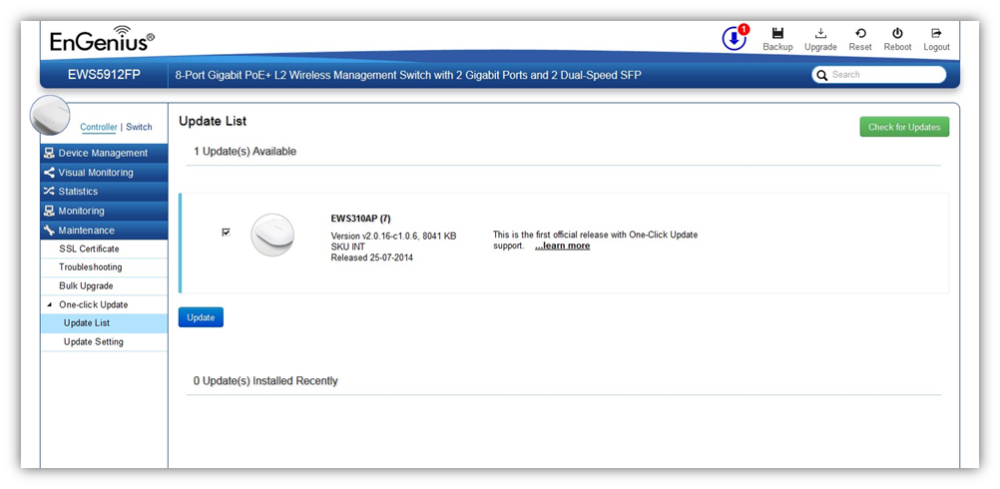

Maintenance > One-Click Update > Update List
This page displays the devices which has new firmware updates available. A release note states the purpose of the firmware. Click on Check for Updates for the EWS Switch to check for the latest firmware. Select the devices you wish to update and click on Update button to begin the updating process.

Created with the Personal Edition of HelpNDoc: Easy EBook and documentation generator